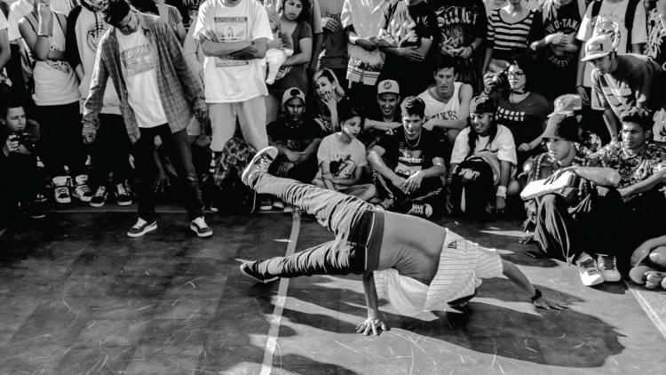

Tabla de estilos músicales
| Estilos | Descripción | |
|---|---|---|
| Electrónica | Esta música está completamente generada de manera virtual, siendo desarrollada desde la década de los años 80 en Alemania, apoderándose rápidamente de la escena mundial hasta la actualidad, donde es uno de los géneros predominantes | |
| Hip Hop | Este género música posee varias características que, cada una de ellas afectan a un nivel:
|
 |
| Indie |
Este estilo musical surgió, como tantos otros, en EEUU durante el siglo XX como respuesta frente al gran control que tenían las grandes empresas de la industria musical como discográficas, cadenas de radio,… Aunque sus inicios son en los años 20, cuando más fuerza toma es en los años 50 y donde realmente se consagran es los años ochenta, en los que también llegó al Reino Unido, España... Sus músicas son desenfadadas y sus letras no tienen tapujos. Ejemplos de música “indie” fueron The Smiths, Happy Mondays o The Cure. En España derivó en la movida madrileña y ha perdurado a lo largo del tiempo. |
|
| Reggae |
Este estilo musical es de origen jamaiquino y de religión rastafari, pero se ha popularizado de manera tal que ahora en todo el mundo se puede escuchar a un fanático del género. Es un ritmo simple y repetitivo que lleva generalmente a la gente a la relajación. Ha sido popularizado principalmente por su máximo exponente, el legendario cantante Bob Marley. De este estilo musical han derivado el ska y el dub |
|
| Rock |
Se trata de un estilo musical muy amplio, ya que dentro de este género se incluyen una enorme variedad de estilos de música popular. El rock Su origen lo tiene en el rock and roll, aunque a su vez también recibe influencias del folk y del blues. En es el rock, se utilizan habitualmente instrumentos como el bajo eléctrico, guitarras eléctricas o electroacústicas, batería y en muchas ocasiones, se añaden otros instrumentos como piano (u órganos), violines, saxo, … |
|
| Funk | El funk o música funky es un tipo de música cuyo origen data de la década de los setenta. Músicos de origen afroamericano fusionaron estilos como el jazz, el soul o y otros latinos para crear este género musical en el que se da mucho más protagonismo al ritmo (batería y bajo eléctrico) que a la melodía. | |
| Mas estilos en... | Planeta musik | |